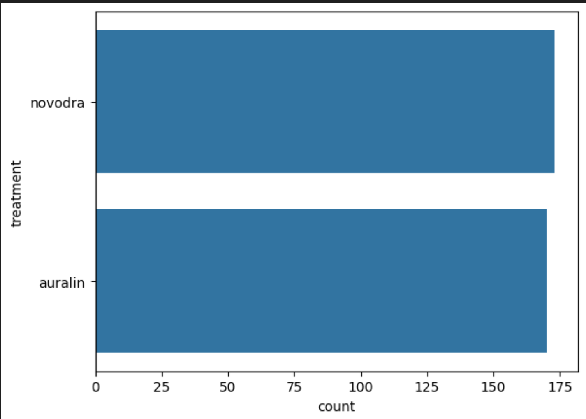

Professional Data Survey Analysis
with Power BIView Project
Data Analyst that is Proficient in Microsoft Excel, Microsoft Power BI, Mysql and Python
• Proficient in Microsoft Office suites
• Strong communication and presentation skills
• Strong analytical, critical thinking, and problem-solving skills
• Attention to detail and Ability to work in a team effectively
• Computer Troubleshooting and Repair




As a recent graduate with a Bachelor’s degree in Computer Engineering from Ladoke Akintola University of Technology, I am eager to bring my skills in data analysis, visualization, and problem-solving to a dynamic team where I can contribute meaningfully and continue learning. During my academic journey, I developed a solid foundation in data tools such as Microsoft Excel, Power BI, Python, and MySQL. As a data analyst, I’ve executed several high-impact projects across diverse domains using tools like Power BI, Excel, and Python. In the Data Professional Survey Analysis, I imported and cleaned complex datasets, standardized variables, and built a relational data model in Power BI to support insightful reporting. I developed DAX measures to calculate key metrics like average salary and satisfaction scores, then visualized these through an interactive dashboard highlighting salary trends, industry challenges, and demographic patterns. This project sharpened my skills in data modeling, Power Query, and DAX, while reinforcing my ability to translate raw data into strategic insights. Similarly, in the Bike Sales Analysis, I cleaned and validated over 1,000 customer records in Excel, used pivot tables to uncover high-conversion demographics, and built dynamic dashboards that guided targeted marketing strategies based on geography, commute patterns, and education level. In the FoodHub Ordering Analysis, I performed deep customer behaviour analysis by cleaning customer and restaurant data, identifying top clients, and isolating peak ordering windows. The dashboard I built allowed users to filter by cuisine, restaurant, and timeframe, driving faster decisions and improving service quality. I also assessed low-rated vendors and provided recommendations that could improve overall satisfaction and operational efficiency. Additionally, my work on the Diabetes Treatment Clinical Trial using Python involved data cleaning, issue detection, and visualization through Matplotlib and Seaborn. This project strengthened my proficiency in exploratory data analysis and statistical visualization, enhancing my ability to communicate complex clinical data effectively to both technical and non-technical stakeholders As an Admin Officer during my NYSC, I significantly enhanced operational efficiency and data accuracy. I improved access to student information by reducing retrieval time by 30% and supported planning and decision-making through timely data reporting. By streamlining data entry workflows in collaboration with departmental staff, I increased overall efficiency by 25%. I successfully entered and managed records for over 100 students with 100% accuracy, completely eliminating data discrepancies and ensuring a reliable, error-free database